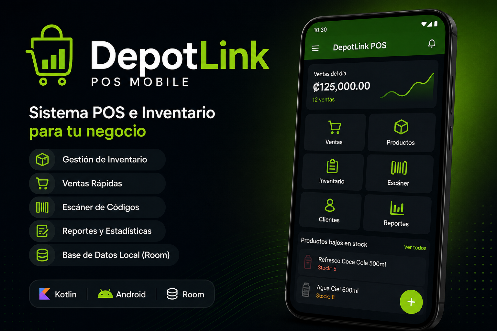
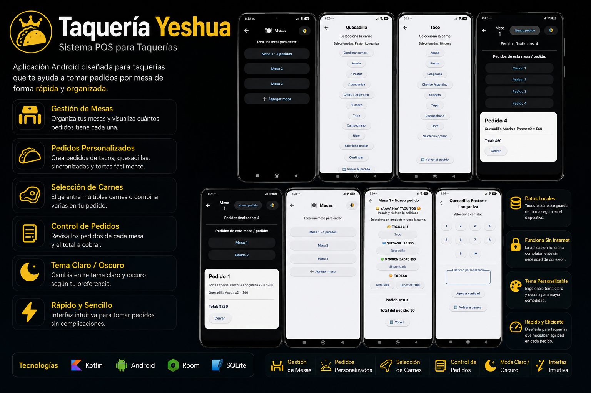
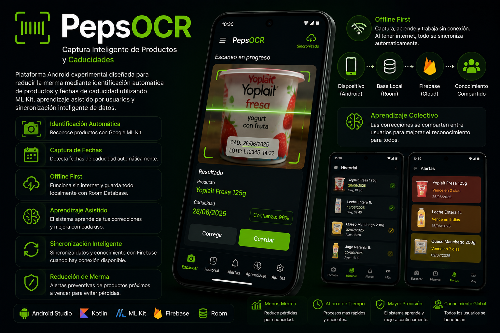
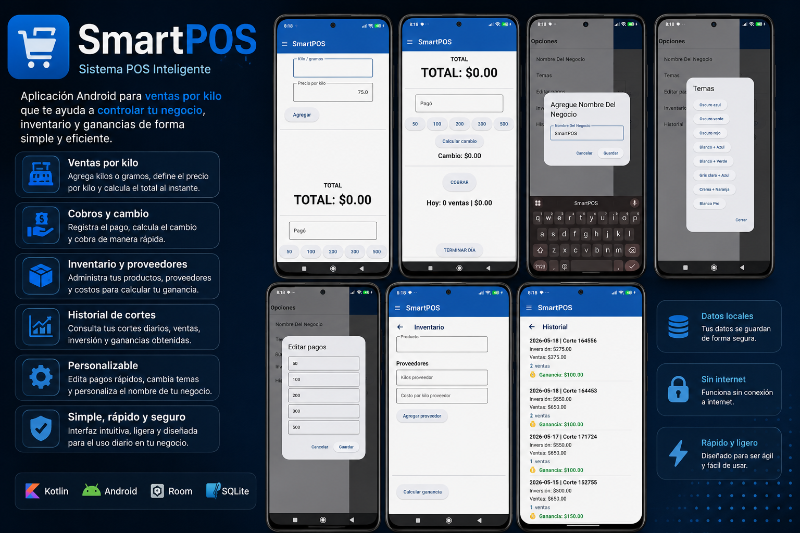
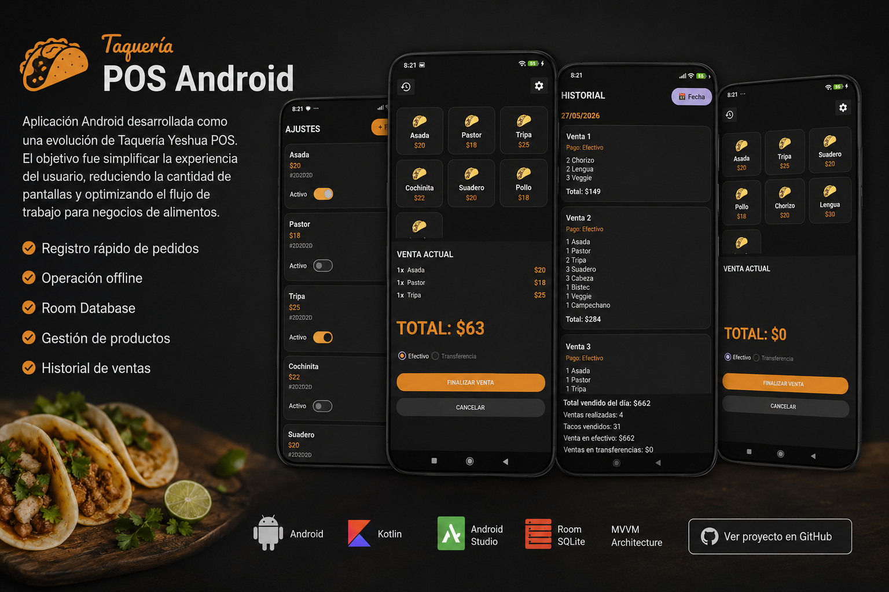
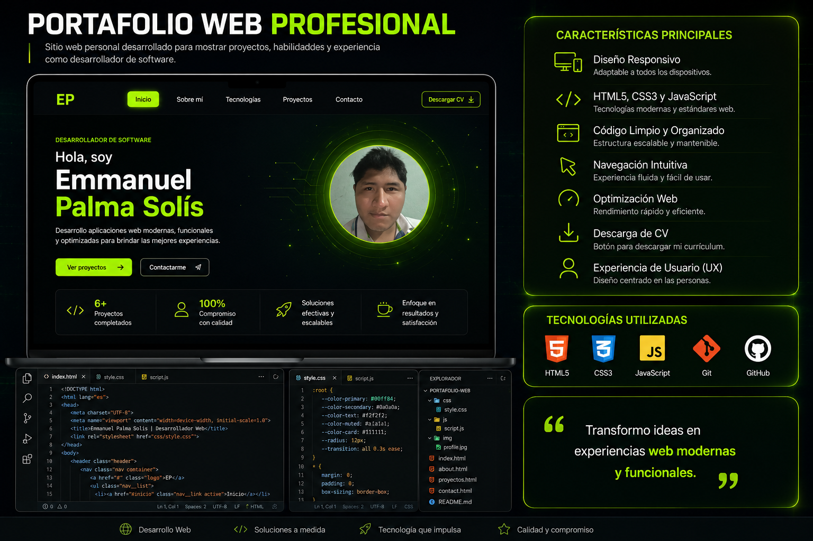

DESARROLLADOR DE SOFTWARE
Transformando esfuerzo constante en soluciones reales.
Desarrollo aplicaciones web modernas, funcionales y optimizadas para brindar experiencias claras, rápidas y profesionales.
Desarrollo aplicaciones Android, automatizaciones y soluciones digitales diseñadas para resolver problemas reales y mejorar la eficiencia.
Aplicaciones Android, sistemas y herramientas diseñadas para resolver necesidades reales.
Desarrollo aplicaciones Android enfocadas en resolver necesidades reales mediante arquitecturas modernas, bases de datos locales y experiencias optimizadas.
Automatización de procesos, OCR y herramientas para reducir trabajo manual.
Desarrollo herramientas orientadas a automatizar procesos repetitivos y mejorar la eficiencia mediante inteligencia visual y OCR.
Software enfocado en mejorar operaciones y aumentar la eficiencia de negocios.
Cada proyecto está diseñado para resolver problemas reales de operación y ayudar a los negocios a tomar mejores decisiones mediante información organizada.
Sitios web modernos, portafolios profesionales y soluciones digitales diseñadas para negocios.
Actualmente desarrollo proyectos web propios enfocados en diseño moderno, experiencia de usuario y presentación profesional de productos y servicios.
Soy desarrollador autodidacta apasionado por la tecnología y la resolución de problemas mediante software.
Mi aprendizaje ha sido principalmente práctico, desarrollando proyectos propios y enfrentando desafíos reales que me han permitido adquirir experiencia en desarrollo Android, automatización de procesos, bases de datos, OCR, integración de sistemas y desarrollo web.
Me adapto rápidamente a nuevas tecnologías y disfruto aprender herramientas que permitan construir soluciones más eficientes.
Proyectos desarrollados
Inicio de proyectos de software
Especialización principal
Base técnica en informática
Herramientas y tecnologías que utilizo para desarrollar aplicaciones, automatizaciones y soluciones digitales.
Haz clic sobre cualquier tecnología para ver información detallada.
Aplicaciones y sistemas desarrollados para resolver problemas reales en negocios y operaciones diarias.

Sistema de punto de venta móvil desarrollado para Android. Permite gestionar usuarios, productos, ventas y operaciones comerciales mediante una arquitectura moderna basada en MVVM.

Punto de venta móvil diseñado para administrar mesas, pedidos y ventas en tiempo real.

Plataforma Android experimental diseñada para reducir la merma mediante identificación automática de productos y fechas de caducidad utilizando ML Kit, Room Database y sincronización con Firebase. El sistema opera bajo una arquitectura Offline First y mejora su precisión mediante aprendizaje asistido por usuarios.

Sistema de punto de venta desarrollado utilizando Python y Flet con almacenamiento local, historial, gestión de productos y una interfaz moderna enfocada en pequeños negocios.

Aplicación Android desarrollada como una evolución de Taquería Yeshua POS. El objetivo fue simplificar la experiencia del usuario, reduciendo la cantidad de pantallas y optimizando el flujo de trabajo para negocios de alimentos.

Portafolio profesional desarrollado para presentar proyectos, experiencia, formación y habilidades técnicas mediante una interfaz moderna y responsive.
Formación técnica en informática, soporte técnico, diseño digital y herramientas empresariales en CEPCI.
Esta etapa fue mi primer contacto formal con la informática y sentó las bases de mi interés por la tecnología.
Formación en programación Python y automatización de procesos en Tokio School.
Esta formación fortaleció mis bases como desarrollador y me permitió comenzar a crear herramientas y automatizaciones reales.
Desarrollo de aplicaciones Android utilizando Kotlin, SQLite y Room Database.
Comencé a desarrollar aplicaciones Android completas enfocadas en negocios, productividad y soluciones móviles reales.
Creación de proyectos reales como DepotLink POS Mobile, PepsOCR, Smart POS y App Taquería.
Cada proyecto fue desarrollado para resolver problemas reales, aprender nuevas tecnologías y fortalecer mi experiencia práctica.
Creación de GitHub, portafolio profesional y presencia digital como desarrollador.
Inicio de la construcción de una identidad profesional enfocada en desarrollo Android, automatización y soluciones digitales.
Formación técnica, aprendizaje continuo y desarrollo práctico mediante proyectos reales.
Marzo 2010 - Septiembre 2011
Formación técnica concluida en informática, soporte técnico, herramientas empresariales y diseño digital.
2025 · Formación de 6 meses
Formación en programación Python y automatización de procesos, complementada posteriormente mediante aprendizaje autodidacta y desarrollo de proyectos propios.
Estoy abierto a oportunidades laborales, proyectos freelance y colaboraciones.